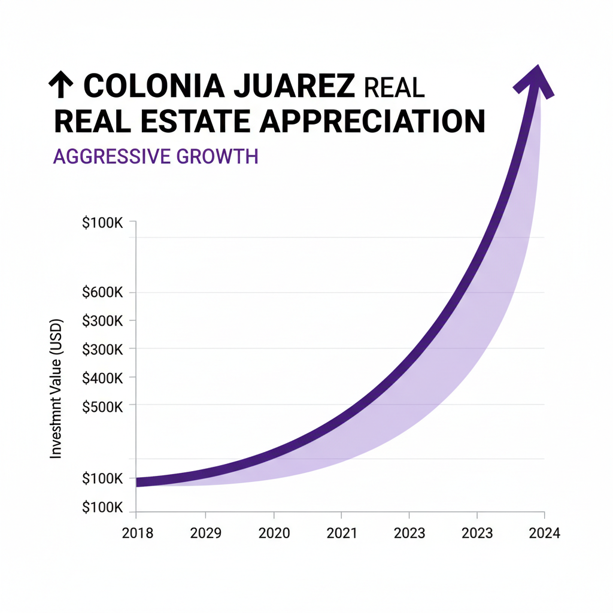

Architectural Guide 2026
Juárez: Where Porfirian Grandeur Meets 21st-Century Precision
Colonia Juárez is not merely a neighborhood; it is a meticulously preserved chronicle of Mexico City's Belle Époque. As architects specializing in ultra-high-net-worth real estate, we understand that investing here means balancing the inherent romance of its heritage with the rigorous demands of modern luxury and a rapidly evolving urban landscape. We bridge global design standards with local technical realities, ensuring your vision for this iconic enclave is realized with uncompromising precision.

The Resident Architect's View
As an architect living in Condesa, I often find myself drawn east to Juárez, especially in the late afternoon. There’s a particular quality of light that filters through the mature trees, illuminating the grand, French-inspired façades along a quiet street like Dublín or Versalles. It’s a sensory experience: the faint, sweet scent of churros mingling with exhaust fumes, the distant, rhythmic clang of the gasero truck, and the distinct hush that falls over certain blocks, even amidst the Cuauhtémoc bustle. I admire the unapologetic elegance of the casonas, each a testament to a bygone era, now being reborn for a new generation. It reminds me of the deep, rich history that underpins every project we undertake in this city, a history that requires respect, precision, and an unwavering commitment to architectural integrity.

Erik Martínez, AIA
Principal Architect. Former SHoP Architects NYC. Bringing international precision to CDMX's most complex heritage assets.
Iconic Landmarks
- Columna de la Independencia (El Ángel)
- Secretaría de Salubridad (Lieja 7)
- Edificio Pigeón (Berlín 36-38)
- Casa Habitación (Turín 40)
The Enduring Allure of Porfirian Mexico
Established in the late 19th and early 20th centuries, Colonia Juárez served as the premier enclave for Mexico's aristocracy during the Porfiriato era. This pedigree endowed the neighborhood with an architectural legacy of eclectic, French-influenced, Art Nouveau, and early Art Deco structures. Today, this historical richness, combined with unparalleled pedestrian access to the Paseo de la Reforma corporate corridor and a burgeoning gastronomic scene, anchors its status as a hyper-prime submarket for elite international capital and the discerning expatriate.
The Anatomy of a Modern Juárez Residence
While the external charm of Juárez is undeniable, developing here in 2026 requires an exacting understanding of its deeply nuanced technical and regulatory landscape. From addressing the systemic issues of urban noise to ensuring resilient infrastructural autonomy, every luxury renovation and new build demands an architectural strategy that anticipates and mitigates inherent urban challenges. It’s about creating a sanctuary of stability within a dynamic city, preserving history while engineering for the future.
Geotechnical Reality: Engineering in Seismic Zone III
Colonia Juárez lies entirely within Zone III (Lakebed Zone) of Mexico City's seismic micro-zoning. This means your property sits atop deep, water-saturated silt and volcanic clay—the remnants of ancient Lake Texcoco. This soil profile is notorious for massively amplifying seismic waves, a critical factor that dictates every structural decision. Standard shallow foundations are legally and physically infeasible for new construction here.
Our specialization lies in engineering resilience. We design and implement robust deep foundation systems, utilizing friction piles or compensation rafts (cajones de cimentación) that anchor buildings dozens of meters down to the capa dura (hard strata) or allow them to 'float' within the clay matrix. We rigorously apply advanced spectral ratio modeling, ensuring the dynamic response of your structure does not resonate with the soil's amplified frequencies. By bridging US NCARB/AIA engineering rigor with specialized local contractors, we protect your capital and ensure structural longevity in this unique geotechnical environment.
Navigating INBAL: The Art of Conservation
The vast majority of Juárez's architectural treasures, constructed predominantly from the late 1890s to the 1930s, fall under the stringent jurisdiction of INBAL (Instituto Nacional de Bellas Artes y Literatura). This federal institution maintains a comprehensive inventory of over 340 cataloged properties, including four specific structures—the Columna de la Independencia, Secretaría de Salubridad, Edificio Pigeón, and Casa Habitación at Turín 40—that hold the highest designation as formal Artistic Monuments. Any property within this conservation polygon or adjacent to a cataloged monument is subject to intense federal scrutiny, requiring authorization for virtually any modification.
INBAL's regulatory philosophy strictly prohibits the alteration or destruction of a building's original structural morphology. Pure 'facadism' is heavily regulated. To secure a Dictamen Favorable (favorable opinion) for Trámite INBA-02-002, renovations often require adherence to historically accurate exterior color palettes and the costly restoration or exact replication of original solid timber or wrought-iron fenestration. While contemporary architectural languages are permitted for new, recessed additions to distinguish modern from historic, navigating these Heritage Hurdles without deep local expertise can lead to significant delays and costly redesigns, prolonging the pre-development phase for an indeterminate number of months.
Water Autonomy: Beyond the Cutzamala Cycle
Despite the Sistema Cutzamala's significant replenishment in late 2025—reaching 86.3% to 95.5% capacity and securing the municipal supply for the next two years—Mexico City remains a water-stressed metropolis. Colonia Juárez, like other central neighborhoods, frequently experiences tandeo (scheduled rationing and low pressure). For luxury assets, this necessitates complete hydrological autonomy. We engineer properties with high-capacity subterranean cisterns, targeting a minimum of 7,000 liters (7 cubic meters) to ensure 5 to 7 days of self-sufficiency for a four-person household. Furthermore, the integration of advanced Rainwater Harvesting (RWH) systems and multi-stage filtration (including reverse osmosis and UV sterilization to combat heavy metals and coliforms from aging municipal pipes) is now a standard expectation for ESG-compliant, ultra-luxury developments, providing an oasis of consistent, purified water.
Architectural Feasibility: Juárez 2026
| Project Type | Avg. Permit Time | Seismic Risk Level | Conservation Status |
|---|---|---|---|
| Heritage Mansion Modernization | 8 - 24 Months (Pre-Permit) + 18 - 36 Months (Construction) | High (INBAL Delays, Zone III Structural) | Highly Regulated (INBAL, SEDUVI H/3/20/A) |
| Luxury Mixed-Use Development (SAC) | 12 - 36 Months (SAC Negotiation) + 24 - 48 Months (Construction) | Very High (Political, Zone III Structural) | Politically Sensitive (SEDUVI SAC, HM/HC Zoning) |
| High-End Interior Refurbishment | 3 - 6 Months (Minor Permit) | Low (Internal Focus) | Permitted (Manifestación Tipo A/B) |

Architectural Precision: Beyond the Surface
A renovation in Juárez is an exercise in meticulous engineering and discreet luxury. We meticulously analyze historical blueprints to ensure structural integrity while integrating 21st-century systems. Crucially, we address the pervasive urban noise by installing double or triple-glazed fenestration with high STC ratings, often requiring the costly replication of original timber frames mandated by INBAL. Interior walls are decoupled, mass-loaded vinyl applied, and every detail calibrated to transform a historic residence into a serene, acoustically isolated haven. Our approach preserves the architectural authenticity while delivering uncompromising modern comfort.
Interior Design: A Dialogue Between Eras
Our interior philosophy for Juárez spaces cultivates a dialogue between its Porfirian legacy and contemporary sophistication. We respect the grand proportions and original volumes, often preserving features like high ceilings and original moldings, while introducing modern fixtures and bespoke furnishings. Lighting design is paramount, strategically deployed to enhance natural light in deeper floor plans and highlight architectural details. We curate materials that resonate with both heritage and luxury—think custom millwork, artisanal metals, and locally sourced stone, creating spaces that are both historically deferential and unequivocally modern.
The Juárez Cheat Sheet
- Best Streets Paseo de la Reforma, Avenida Chapultepec, Zona Rosa, Versalles, Dublín, Turín
- Zoning Code H/3/20/A (Residential), HM (Mixed Use), HC (Commercial/Residential)
- Est. Cost / m² MXN 82,000 - MXN 95,000 per m² (Prime Residential)
- Best Coffee Forte Lo Mejor de Especialidad, Más Alla Café
- Local Quirk The distinct, almost theatrical soundscape of street vendors, from the piercing call of the gasero to the metallic cry of scrap collectors, a constant urban rhythm.
The Challenge
The primary challenge in Juárez is reconciling strict federal heritage conservation mandates with the imperative for robust seismic engineering in a Zone III lakebed environment, all while navigating a complex regulatory landscape.
Furthermore, the process of obtaining a Manifestación de Construcción is merely the final step after 8-24 months of securing prerequisite approvals, facing bureaucratic friction that can severely impact project timelines and capital deployment.
Our Solution
We specialize in integrated solutions: engineering deep-pile foundations that meet the most rigorous post-2017 seismic codes, developing designs that satisfy INBAL's aesthetic and structural constraints, and employing advanced acoustic mitigation techniques for true urban tranquility. Our approach ensures both structural integrity and heritage preservation.
We eliminate the 'Gringo Tax' through absolute transparency and a network of trusted professionals. Our project management operates on auditable cost-plus-margin contracts, ensuring fair market rates (typically $1,500-$2,500 USD per square meter for luxury finishes) and protecting your capital from opportunistic inflation. Our highly connected Notario Público and DRO navigate permits, taxes, and inspections with unparalleled efficiency.


Planning to Buy?
Don't sign a contract before a technical audit. We offer pre-purchase structural assessments in Juárez.
2026 Cost Report
Get our detailed breakdown of current labor and material costs for luxury residential in CDMX.
Start Your Juárez Legacy
NYC Precision. Mexican Craft. We eliminate uncertainty for international investors.